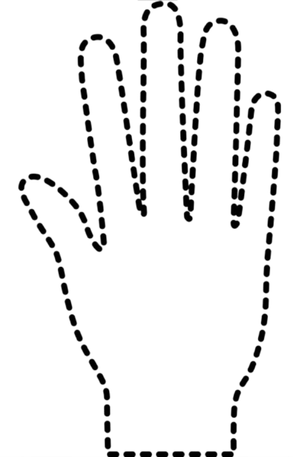

Ready
Trial Info: —

Put palm here
⚠️ IMPORTANT: Start Position!
Fingers WIDE OPEN
Palm facing camera
Then tap BIG and FAST
Palm facing camera
Then tap BIG and FAST
DO NOT START WITH FINGERS CLOSED!
Press SPACEBAR to begin the test